Source & review coverageمنبع و پوشش مرور
Analysis of the supplied 19-page manuscript, including its methods, reported experiments, limitations, appendices, 11 numbered figure views and 11 table records. Captions below are bilingual summaries; original complete captions, tables, and pages remain available. Only explicitly printed values are transcribed. Publication status, external code, datasets and API claims have not been independently authenticated or executed. Prices, model names and versions are historical statements of this source, not current service guidance.تحلیل نسخه 19 صفحهای ارائهشده، شامل روش، آزمایشهای گزارششده، محدودیتها، پیوستها، 11 نمای شکل شمارهدار و 11 رکورد جدول. عنوانها خلاصه دوزبانهاند؛ عنوان کامل، جدول و صفحات اصلی در دسترساند. فقط مقادیر چاپشده نقل میشوند. وضعیت انتشار، کد بیرونی، داده و ادعای API مستقلاً تأیید یا اجرا نشدهاند. قیمت، نام و نسخه مدل، گزارش تاریخی همین منبع است و راهنمای سرویس فعلی نیست.
Identity, questions & hypothesis statusمشخصات، پرسشها و فرضیهها
Eliseo Curcio, QuarluxAI, supplied manuscript identifying the study as 2026. It predicts which of 19 energy-conservation categories a certified NYC LL87 auditor recorded, not actual retrofit savings, physical suitability or an operating schedule. The central questions concern native versus verbalized probabilities, efficiency, retrieval and uncertainty routing.نویسنده Eliseo Curcio از QuarluxAI؛ نسخه ارائهشده مطالعه را مربوط به ۲۰۲۶ معرفی میکند. هدف پیشبینی ثبت یکی از ۱۹ دسته اقدام توسط ممیز LL87 نیویورک است، نه صرفهجویی واقعی، مناسببودن فیزیکی یا برنامه بهرهبرداری. پرسشها کیفیت احتمال بومی در برابر احتمال بیانشده، کارایی، بازیابی و ارجاع عدمقطعیتاند. Source · PDF p. 1Source · PDF p. 2Source · PDF p. 3Source · PDF p. 14
Three primary Brier contrasts are preregistered: Jev versus Claude and GPT without retrieval, and Jev with retrieval versus neighbor voting. Section 5.6 explicitly labels H3: full-data XGBoost beats Jev on micro-F1 and a crossover exists at 200 or fewer labels. At the fixed 0.5 cutoff, all five 50-label runs beat Jev; this is not the same as beating retrieval-assisted Jev on Brier.سه مقایسه اصلی Brier از پیش ثبت شدهاند: Jev با Claude و GPT بدون بازیابی، و Jev با بازیابی در برابر رأی همسایهها. بخش ۵٫۶ فرضیه H3 را صریح بیان میکند: برتری XGBoost کامل در micro-F1 و نقطه عبور با حداکثر ۲۰۰ برچسب. در آستانه ۰٫۵ هر پنج اجرای ۵۰ برچسبی برترند؛ این با برتری Brier بر Jev دارای بازیابی یکسان نیست. Source · PDF p. 6Source · PDF p. 9Source · PDF p. 10Source · PDF p. 17
Data, request contract & reproducible designداده، قرارداد درخواست و طراحی بازتولیدپذیر
10,702 audit records become 7,296 buildings after selecting each BBL’s latest labeled submission. Building-grouped, type-stratified splits contain 5,536 training, 300 calibration and 1,460 test buildings. Every request includes 11 building fields and 19 binary category questions; recommendation, savings, cost and payback fields are excluded. Retrieval supplies the same five nearest training buildings to every pretrained arm and to neighbor voting.از ۱۰۷۰۲ رکورد پس از انتخاب آخرین ثبت برچسبدار هر BBL، ۷۲۹۶ ساختمان حاصل میشود. تقسیم گروهی ساختمان و طبقهبندی نوع: ۵۵۳۶ آموزش، ۳۰۰ کالیبراسیون و ۱۴۶۰ آزمون. هر درخواست ۱۱ ویژگی و ۱۹ پرسش دودویی دارد؛ توصیه، صرفهجویی، هزینه و بازگشت سرمایه حذف شدهاند. پنج همسایه آموزشی یکسان به مدلها و رأی همسایه داده میشوند. Source · PDF p. 4Source · PDF p. 5Source · PDF p. 6
Jev 1.13.0 returns one Noul probability per category; LLMs emit 19 probabilities as validated JSON with at most two resends. Comparators are Claude Sonnet 5.5, GPT-6.1 Sol, post hoc Grok 4.7 and Kimi K3, plus per-category XGBoost with out-of-fold Platt calibration, five-neighbor voting and training prevalence. The common LLM comparison uses 200 buildings; Jev/local baselines also use all 1,460.Jev 1.13.0 برای هر دسته احتمال Noul میدهد؛ LLM ها ۱۹ احتمال در JSON معتبر با حداکثر دو ارسال مجدد میسازند. مقایسهها Claude Sonnet 5.5، GPT-6.1 Sol، افزوده پسینی Grok 4.7 و Kimi K3 و نیز XGBoost با کالیبراسیون Platt خارج از فولد، رأی پنج همسایه و فراوانی آموزشاند. مقایسه مشترک LLM روی ۲۰۰ ساختمان است؛ Jev و پایه محلی روی کل ۱۴۶۰ نیز آزمودهاند. Source · PDF p. 3Source · PDF p. 4Source · PDF p. 5Source · PDF p. 6
Experiments, baselines & inferenceآزمایشها، خطمبناها و استنباط
Primary tests use 10,000 paired sign-flip permutations, Holm correction over three contrasts and 10,000 building-bootstrap resamples. Further tests examine reliability, ranking/AUC, calibration-set cutoff tuning, 50/200/1,000/full-label XGBoost learning curves, identifier-only requests, input reformatting and repeated calls. Grok/Kimi additions and cutoff/cascade analyses are exploratory.آزمون اصلی از ۱۰۰۰۰ جایگشت علامت جفتی، تصحیح Holm در سه مقایسه و ۱۰۰۰۰ بازنمونه ساختمان استفاده میکند. آزمون تکمیلی شامل قابلیت اعتماد، AUC، تنظیم آستانه روی کالیبراسیون، منحنی یادگیری ۵۰/۲۰۰/۱۰۰۰/کل، شناسه تنها، تغییر قالب و تکرار درخواست است. Grok/Kimi و تحلیل آستانه و آبشار اکتشافیاند. Source · PDF p. 6Source · PDF p. 8Source · PDF p. 9Source · PDF p. 10Source · PDF p. 14
The replay cascade escalates a building when mean p(1−p) across categories exceeds a calibration-set quantile. It pays the first stage on every building and the LLM on escalations, and compares against random escalation at the same rate. With Claude, only 2 of 9 intermediate rates have unadjusted intervals excluding zero; with GPT none do. Replay latency is not measured live cascade latency.آبشار بازپخش وقتی میانگین p(1−p) دستهها از چندک کالیبراسیون بیشتر شود، ساختمان را ارجاع میدهد. هزینه مرحله اول برای همه و LLM برای موارد ارجاع محاسبه و با ارجاع تصادفی همنرخ مقایسه میشود. برای Claude فقط ۲ از ۹ نرخ میانی بازه تصحیحنشده غیرصفر دارند؛ برای GPT هیچکدام. تأخیر بازپخش، تأخیر آبشار زنده نیست. Source · PDF p. 11Source · PDF p. 12
Author-stated strengths, limits & future workقوتها، محدودیتها و کار آینده از دید نویسنده
The paper contributes a grouped split, matched requests, local supervised controls, billed usage and explicit error decomposition [7–11]. It reports that 44.6% of an earlier record-split test shared a BBL with training; the performance change also includes deduplication and population changes and is not attributed to leakage alone.مقاله تقسیم گروهی، درخواست همسان، پایه نظارتشده محلی، مصرف صورتحساب و تفکیک خطای احتمال را ارائه میکند [7–11]. در تقسیم رکوردی پیشین، ۴۴٫۶٪ آزمون با آموزش BBL مشترک داشته؛ تغییر عملکرد همزمان شامل حذف تکرار و تغییر جمعیت است و فقط به نشت نسبت داده نمیشود. Source · PDF p. 2Source · PDF p. 3Source · PDF p. 14
Labels represent auditor records; absence is not proof of unsuitability. LLM comparisons use 200 buildings, non-deterministic APIs and asymmetric reasoning settings. Post hoc models lack repeated robustness checks; cascade tests had prior feasibility exposure; savings-weighted evaluation is omitted due to implausible source values. Text-rich and genuinely sequential uses remain future work.برچسب نشاندهنده ثبت ممیز است؛ نبود ثبت نامناسببودن را اثبات نمیکند. مقایسه LLM روی ۲۰۰ ساختمان با API غیرقطعی و تنظیم استدلال نامتقارن است. مدلهای پسینی آزمون استحکام تکراری ندارند؛ آزمون آبشار پیشتر در امکانسنجی دیده شده و تحلیل وزندار صرفهجویی به دلیل مقادیر نامعقول حذف شده است. متن غنی و کاربرد ترتیبی واقعی برای آیندهاند. Source · PDF p. 13Source · PDF p. 14
Key reported resultsنتایج کلیدی گزارششده
Primary common-set Brier: Jev .1546, Claude .1327, GPT .1466 without retrieval. With retrieval, Jev .1066 and XGBoost .0899. Jev is cheaper per API prediction but not the most accurate arm.Brier مشترک بدون بازیابی: Jev برابر ۰٫۱۵۴۶، Claude برابر ۰٫۱۳۲۷ و GPT برابر ۰٫۱۴۶۶. با بازیابی Jev برابر ۰٫۱۰۶۶ و XGBoost برابر ۰٫۰۸۹۹. Jev از نظر API ارزانتر است ولی دقیقترین روش نیست. Source · PDF p. 7Source · PDF p. 16
Figures, captions & extracted evidenceشکلها، عنوانها و شواهد استخراجشده
Figure 1
Probabilistic evidenceشواهد احتمالاتی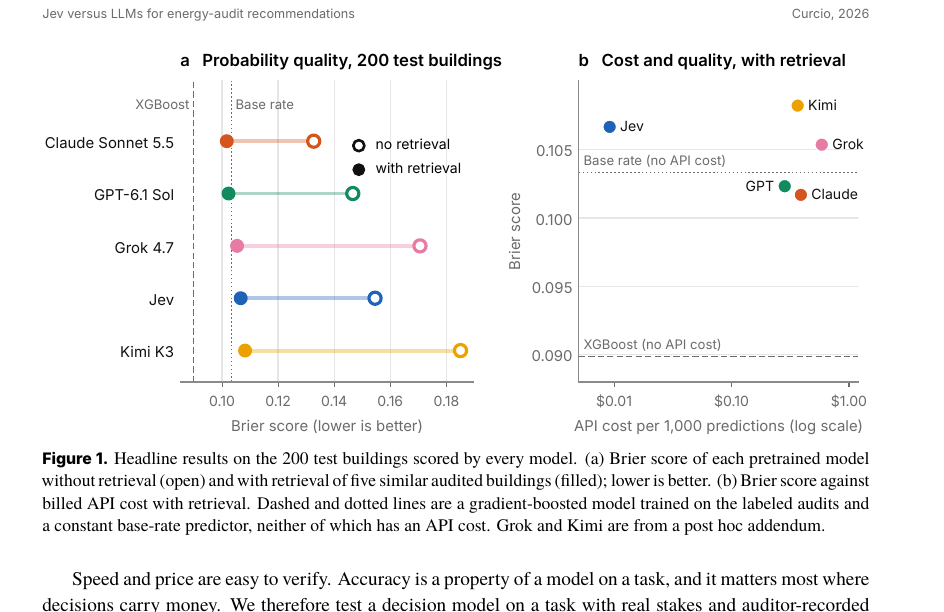
How to read this figureراهنمای خواندن شکل
Compare the hypotheses using the legend and the displayed cases. A posterior is the model’s belief; assess it alongside the reported diagnostic outcomes, rather than treating confidence alone as correctness.فرضیهها را با راهنمای رنگ و حالتهای نمایشدادهشده مقایسه کنید. پسین باور مدل است؛ آن را همراه نتیجه تشخیص بسنجید و اطمینان را بهتنهایی معادل صحت نگیرید.
Reader guidance · not an additional author claimراهنمای مطالعه · ادعای اضافی نویسنده نیستWhat this figure showsاین شکل چه نشان میدهد؟
Panel (a) matches all models on 200 common buildings; open/filled markers separate retrieval. Panel (b) compares cost and Brier with local baselines as reference lines. Low API cost and best probability quality belong to different arms.پنل الف همه مدلها را روی ۲۰۰ ساختمان مشترک مقایسه و نشانگر توخالی/پر بازیابی را جدا میکند. پنل ب هزینه و Brier را با خطوط پایه محلی مقایسه میکند. کمترین هزینه API و بهترین کیفیت احتمال متعلق به روش یکسان نیست.
Reported values & evidence limitsمقادیر گزارششده و حدود شواهد
Table 6: Jev Brier 0.1546→0.1066 with retrieval; XGBoost 0.0899; base rate 0.1033. API charge excludes unmeasured local training/serving costs.جدول ۶: Brier مربوط به Jev با بازیابی از ۰٫۱۵۴۶ به ۰٫۱۰۶۶؛ XGBoost برابر ۰٫۰۸۹۹ و پایه فراوانی ۰٫۱۰۳۳ است. هزینه آموزش/میزبانی محلی اندازهگیری نشده است.
Figure 2
Probabilistic evidenceشواهد احتمالاتی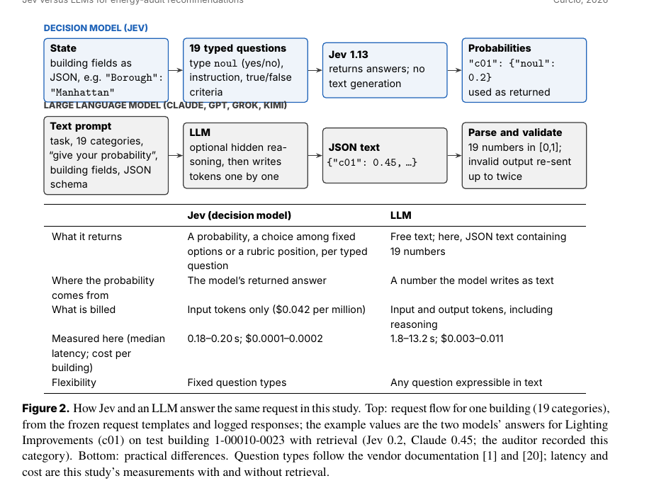
How to read this figureراهنمای خواندن شکل
Compare the hypotheses using the legend and the displayed cases. A posterior is the model’s belief; assess it alongside the reported diagnostic outcomes, rather than treating confidence alone as correctness.فرضیهها را با راهنمای رنگ و حالتهای نمایشدادهشده مقایسه کنید. پسین باور مدل است؛ آن را همراه نتیجه تشخیص بسنجید و اطمینان را بهتنهایی معادل صحت نگیرید.
Reader guidance · not an additional author claimراهنمای مطالعه · ادعای اضافی نویسنده نیستWhat this figure showsاین شکل چه نشان میدهد؟
Both flows use identical evidence and 19 category questions. Jev returns typed values; the LLM generates and validates JSON. The illustrated lighting answer is a single case, not a calibrated rate.هر دو مسیر شاهد یکسان و ۱۹ پرسش دارند. Jev مقدار نوعدار و LLM متن JSON همراه اعتبارسنجی تولید میکند. مثال روشنایی یک مورد است، نه نرخ کالیبرهشده.
Reported values & evidence limitsمقادیر گزارششده و حدود شواهد
Example: Jev 0.2, Claude 0.45; the category was recorded. Median ranges 0.18–0.20 s versus 1.8–13.2 s.مثال: Jev برابر ۰٫۲ و Claude برابر ۰٫۴۵؛ دسته ثبت شده بود. دامنه میانه تأخیر ۰٫۱۸–۰٫۲۰ در برابر ۱٫۸–۱۳٫۲ ثانیه است.
Figure 3
Calibration & selective riskکالیبراسیون و ریسک انتخابی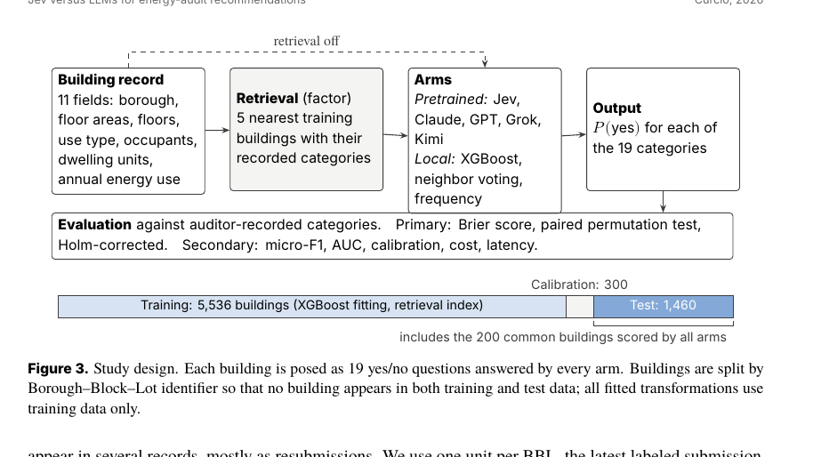
How to read this figureراهنمای خواندن شکل
Check what the probability or confidence represents, which examples are retained, and the calibration split. A reliable pooled score does not guarantee reliable decisions in every domain or a safe action at a particular step.معنای احتمال یا اطمینان، نمونههای نگهداشتهشده و تقسیم کالیبراسیون را بررسی کنید. نمره تجمیعی مناسب، تصمیم معتبر در همه دامنهها یا ایمنی اقدام خاص را تضمین نمیکند.
Reader guidance · not an additional author claimراهنمای مطالعه · ادعای اضافی نویسنده نیستWhat this figure showsاین شکل چه نشان میدهد؟
Follow building features through optional retrieval to 19 probabilities and the auditor-recorded reference. Calibration buildings are excluded from fitting and retrieval, preventing use of their labels as nearest neighbors.ویژگی ساختمان را از بازیابی اختیاری تا ۱۹ احتمال و مرجع ممیز دنبال کنید. ساختمان کالیبراسیون از برازش و بازیابی حذف شده است.
Reported values & evidence limitsمقادیر گزارششده و حدود شواهد
5,536 train / 300 calibration / 1,460 test; 200 common LLM cases; 11 inputs and 19 categories.۵۵۳۶ آموزش / ۳۰۰ کالیبراسیون / ۱۴۶۰ آزمون؛ ۲۰۰ مورد مشترک LLM؛ ۱۱ ورودی و ۱۹ دسته.
Figure 4
Comparison & resultsمقایسه و نتایج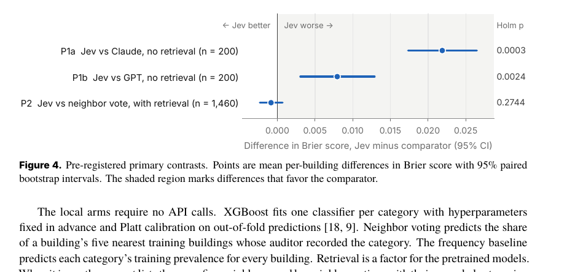
How to read this figureراهنمای خواندن شکل
Check the axes, units, panel labels and the caption’s definition of better performance. Compare methods under the stated conditions; keep uncertainty, tradeoffs and normalization separate from headline gains.محور، واحد، پنل و تعریف عملکرد بهتر در عنوان را بررسی کنید. روشها را در شرایط بیانشده مقایسه و عدمقطعیت، مصالحه و نرمالسازی را از بهبود شاخص اصلی جدا نگه دارید.
Reader guidance · not an additional author claimراهنمای مطالعه · ادعای اضافی نویسنده نیستWhat this figure showsاین شکل چه نشان میدهد؟
Positive Jev-minus-comparator means worse Brier. Paired intervals exclude zero for the no-retrieval LLM contrasts but not the retrieval neighbor-vote contrast. Non-significance is not equivalence.اختلاف مثبت Jev منهای مقایسه در Brier بدتر است. بازه جفتی برای LLM بدون بازیابی صفر را شامل نمیشود ولی برای رأی همسایه شامل میشود. غیرمعناداری برابری نیست.
Reported values & evidence limitsمقادیر گزارششده و حدود شواهد
Table 5: +0.0219 [0.0174,0.0265], +0.0079 [0.0031,0.0129], −0.0008 [−0.0023,0.0007]; Holm p .0003/.0024/.2744.جدول ۵: اختلافهای ۰٫۰۲۱۹+، ۰٫۰۰۷۹+ و ۰٫۰۰۰۸−؛ p تصحیحشده ۰٫۰۰۰۳، ۰٫۰۰۲۴ و ۰٫۲۷۴۴؛ بازهها در منبع درج شدهاند.
Figure 5
Source visualتصویر منبع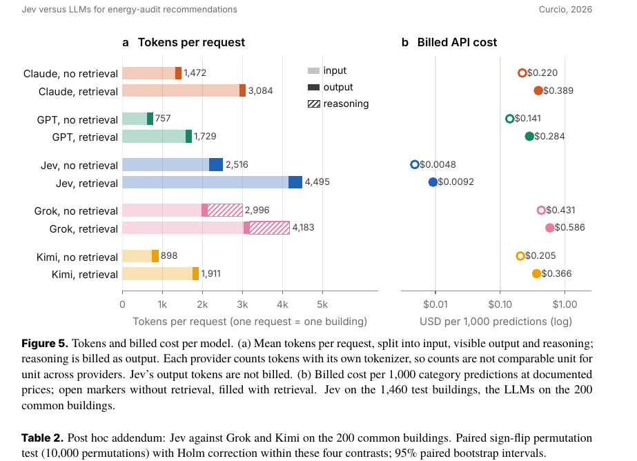
How to read this figureراهنمای خواندن شکل
Read the original labels and caption first, then use the explanation and evidence note below. Printed quantities are preserved separately from reviewer interpretation.ابتدا برچسبها و عنوان اصلی را بخوانید و سپس توضیح و یادداشت شاهد را بررسی کنید. مقدار چاپشده از تفسیر مرورگر جدا نگه داشته شده است.
Reader guidance · not an additional author claimراهنمای مطالعه · ادعای اضافی نویسنده نیستWhat this figure showsاین شکل چه نشان میدهد؟
Token stacks separate input, output and reasoning. Equal token counts across different tokenizers are not equal computational work. Cost is per 1,000 category predictions, not per 1,000 buildings.ستونها ورودی، خروجی و استدلال را جدا میکنند. شمار توکن در توکنسازهای متفاوت کار محاسباتی برابر نیست. هزینه برای هزار پیشبینی دسته است، نه هزار ساختمان.
Reported values & evidence limitsمقادیر گزارششده و حدود شواهد
Jev $0.0048/$0.0092 without/with retrieval; Claude $0.2198/$0.3894; GPT $0.1407/$0.2837 (Table 1).Jev بدون/با بازیابی ۰٫۰۰۴۸/۰٫۰۰۹۲ دلار؛ Claude برابر ۰٫۲۱۹۸/۰٫۳۸۹۴ و GPT برابر ۰٫۱۴۰۷/۰٫۲۸۳۷ دلار است (جدول ۱).
Figure 6
Calibration & selective riskکالیبراسیون و ریسک انتخابی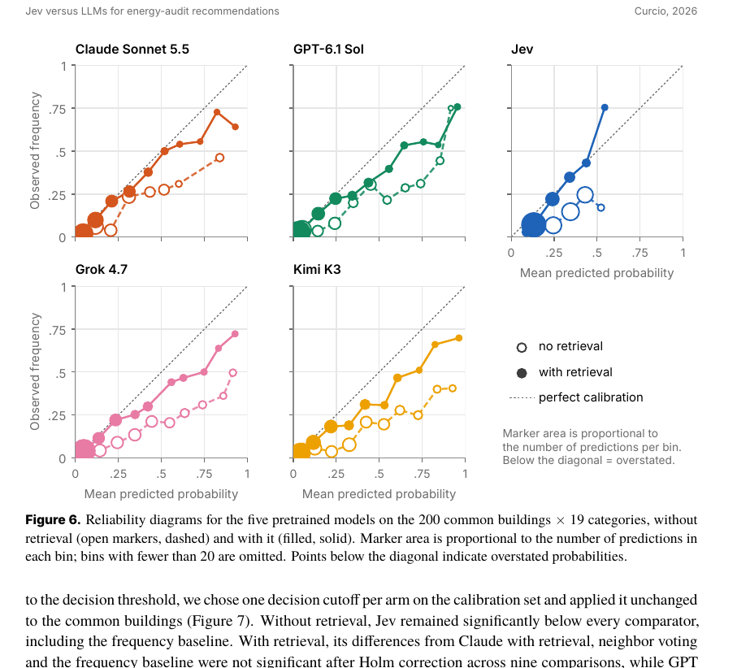
How to read this figureراهنمای خواندن شکل
Check what the probability or confidence represents, which examples are retained, and the calibration split. A reliable pooled score does not guarantee reliable decisions in every domain or a safe action at a particular step.معنای احتمال یا اطمینان، نمونههای نگهداشتهشده و تقسیم کالیبراسیون را بررسی کنید. نمره تجمیعی مناسب، تصمیم معتبر در همه دامنهها یا ایمنی اقدام خاص را تضمین نمیکند.
Reader guidance · not an additional author claimراهنمای مطالعه · ادعای اضافی نویسنده نیستWhat this figure showsاین شکل چه نشان میدهد؟
The diagonal represents calibration; points below it overstate prevalence. Marker area is bin population and bins below 20 predictions are omitted. Retrieval changes probability scale; it does not guarantee superior ranking.قطر نشاندهنده کالیبراسیون و نقاط زیر آن نشاندهنده بیشبرآورد فراوانیاند. مساحت نشانگر جمعیت سطل است و سطل زیر ۲۰ پیشبینی حذف میشود. بازیابی مقیاس احتمال را تغییر میدهد و رتبهبندی برتر را تضمین نمیکند.
Reported values & evidence limitsمقادیر گزارششده و حدود شواهد
200×19 predictions; full-test Jev mean probability about .33 versus prevalence .146 without retrieval. No curve coordinates estimated.۲۰۰×۱۹ پیشبینی؛ میانگین احتمال Jev در کل آزمون بدون بازیابی حدود ۰٫۳۳ در برابر فراوانی ۰٫۱۴۶. مختصات منحنی تخمین زده نشده است.
Figure 7
Calibration & selective riskکالیبراسیون و ریسک انتخابی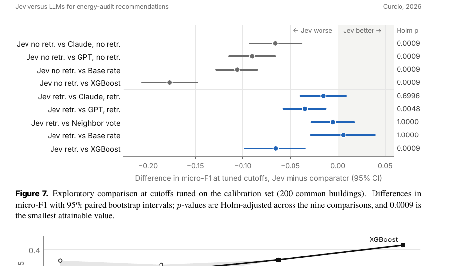
How to read this figureراهنمای خواندن شکل
Check what the probability or confidence represents, which examples are retained, and the calibration split. A reliable pooled score does not guarantee reliable decisions in every domain or a safe action at a particular step.معنای احتمال یا اطمینان، نمونههای نگهداشتهشده و تقسیم کالیبراسیون را بررسی کنید. نمره تجمیعی مناسب، تصمیم معتبر در همه دامنهها یا ایمنی اقدام خاص را تضمین نمیکند.
Reader guidance · not an additional author claimراهنمای مطالعه · ادعای اضافی نویسنده نیستWhat this figure showsاین شکل چه نشان میدهد؟
These are Jev-minus-comparator F1 differences, so positive now favors Jev. Thresholds are fitted on calibration data. The baseline methods also receive tuning; tuning is not a uniquely Jev benefit.اختلاف F1 از نوع Jev منهای مقایسه است؛ مثبت اینجا به نفع Jev است. آستانهها روی کالیبراسیون برازش میشوند و پایهها نیز تنظیم میشوند؛ تنظیم مزیت اختصاصی Jev نیست.
Reported values & evidence limitsمقادیر گزارششده و حدود شواهد
Nine Holm-adjusted comparisons; Jev+retrieval versus GPT+retrieval −.035 [−.057,−.013], p=.0048 (Table 8).نه مقایسه با Holm؛ Jev دارای بازیابی در برابر GPT دارای بازیابی اختلاف ۰٫۰۳۵− با بازه [۰٫۰۵۷−، ۰٫۰۱۳−] و p=۰٫۰۰۴۸ دارد (جدول ۸).
Figure 8
Source visualتصویر منبع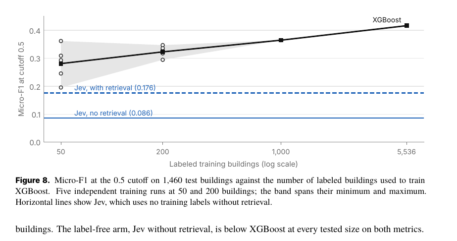
How to read this figureراهنمای خواندن شکل
Read the original labels and caption first, then use the explanation and evidence note below. Printed quantities are preserved separately from reviewer interpretation.ابتدا برچسبها و عنوان اصلی را بخوانید و سپس توضیح و یادداشت شاهد را بررسی کنید. مقدار چاپشده از تفسیر مرورگر جدا نگه داشته شده است.
Reader guidance · not an additional author claimراهنمای مطالعه · ادعای اضافی نویسنده نیستWhat this figure showsاین شکل چه نشان میدهد؟
Horizontal references are fixed-cutoff Jev scores on all test buildings; the band spans five training runs, not a 95% confidence band. Retrieval-assisted Jev draws neighbors from the full labeled training set.خطوط افقی نمره Jev با آستانه ثابت در کل آزموناند؛ نوار دامنه پنج آموزش است، نه بازه اطمینان ۹۵٪. همسایههای Jev دارای بازیابی از کل آموزش برچسبدارند.
Reported values & evidence limitsمقادیر گزارششده و حدود شواهد
XGBoost F1 .281/.323/.365/.417 for 50/200/1,000/5,536 labels; Jev .086/.176 without/with retrieval.F1 مربوط به XGBoost برای ۵۰/۲۰۰/۱۰۰۰/۵۵۳۶ برچسب: ۰٫۲۸۱/۰٫۳۲۳/۰٫۳۶۵/۰٫۴۱۷؛ Jev بدون/با بازیابی ۰٫۰۸۶/۰٫۱۷۶.
Figure 9
Source visualتصویر منبع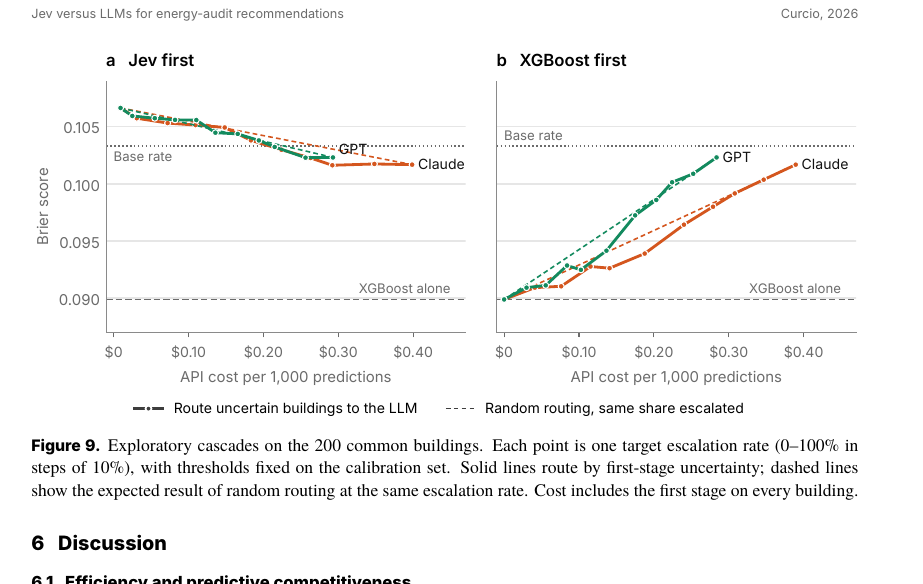
How to read this figureراهنمای خواندن شکل
Read the original labels and caption first, then use the explanation and evidence note below. Printed quantities are preserved separately from reviewer interpretation.ابتدا برچسبها و عنوان اصلی را بخوانید و سپس توضیح و یادداشت شاهد را بررسی کنید. مقدار چاپشده از تفسیر مرورگر جدا نگه داشته شده است.
Reader guidance · not an additional author claimراهنمای مطالعه · ادعای اضافی نویسنده نیستWhat this figure showsاین شکل چه نشان میدهد؟
Read quality against escalation rate together with total cost and the matched random-routing line. The first stage costs money even when every item escalates. A selected point with no detected loss is not established equivalence.کیفیت نسبت به نرخ ارجاع را همراه هزینه کل و خط ارجاع تصادفی همنرخ بخوانید. حتی با ارجاع همه، مرحله اول هزینه دارد. نبود افت قابل کشف در نقطه انتخابی، اثبات برابری نیست.
Reported values & evidence limitsمقادیر گزارششده و حدود شواهد
72.5% escalation to Claude: Brier .1016, cost $.292/1k versus Claude .1017 and $.389; replay median 2.25 s versus 2.11 s.ارجاع ۷۲٫۵٪ به Claude: Brier برابر ۰٫۱۰۱۶ و هزینه ۰٫۲۹۲ دلار/هزار در برابر ۰٫۱۰۱۷ و ۰٫۳۸۹؛ میانه بازپخش ۲٫۲۵ در برابر ۲٫۱۱ ثانیه.
Figure 10
Comparison & resultsمقایسه و نتایج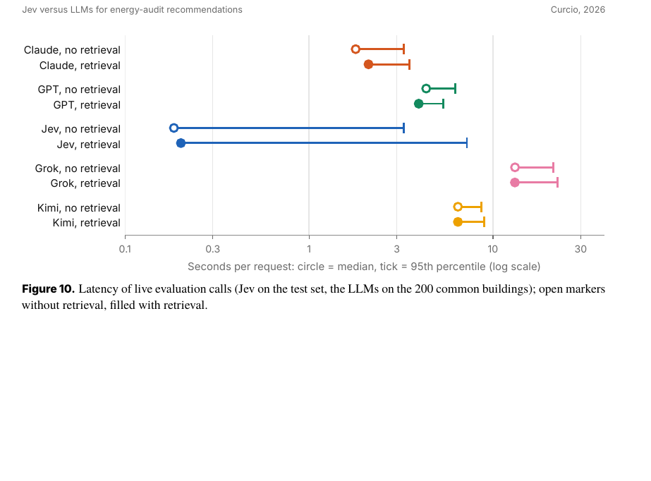
How to read this figureراهنمای خواندن شکل
Check the axes, units, panel labels and the caption’s definition of better performance. Compare methods under the stated conditions; keep uncertainty, tradeoffs and normalization separate from headline gains.محور، واحد، پنل و تعریف عملکرد بهتر در عنوان را بررسی کنید. روشها را در شرایط بیانشده مقایسه و عدمقطعیت، مصالحه و نرمالسازی را از بهبود شاخص اصلی جدا نگه دارید.
Reader guidance · not an additional author claimراهنمای مطالعه · ادعای اضافی نویسنده نیستWhat this figure showsاین شکل چه نشان میدهد؟
Circles show medians and ticks p95 on a logarithmic scale. Jev’s median speed advantage coexists with substantial tail latency; request-level latency does not measure complete HEMS recovery time.دایره میانه و خط کوتاه صدک ۹۵ روی مقیاس لگاریتمی است. مزیت میانه Jev با دنباله تأخیر قابل توجه همراه است؛ تأخیر درخواست، زمان بازیابی کامل HEMS نیست.
Reported values & evidence limitsمقادیر گزارششده و حدود شواهد
Reported Jev p95 3.3/7.2 s without/with retrieval versus Claude 3.3–3.5 s (p.7). No unlabeled values estimated.صدک ۹۵ Jev بدون/با بازیابی ۳٫۳/۷٫۲ ثانیه و Claude برابر ۳٫۳–۳٫۵ است (ص ۷). مقدار بدون برچسب تخمین زده نشده است.
Figure 11
Calibration & selective riskکالیبراسیون و ریسک انتخابی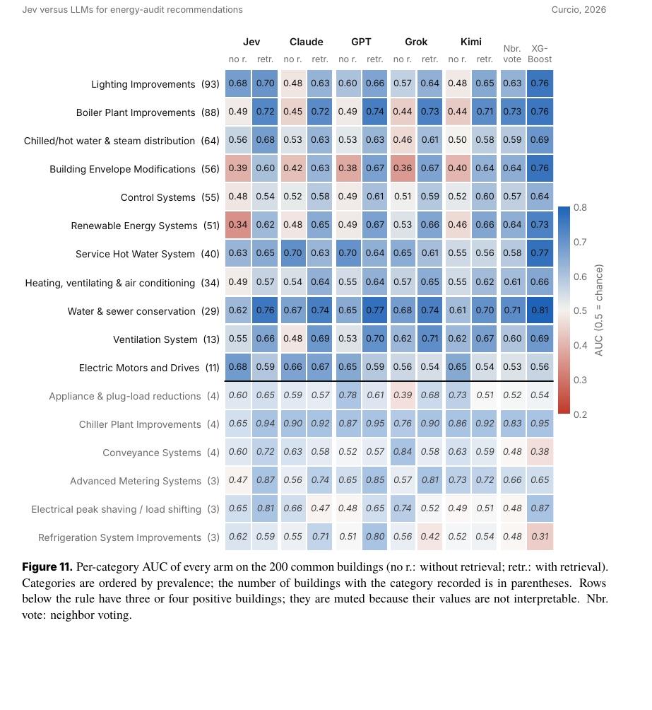
How to read this figureراهنمای خواندن شکل
Check what the probability or confidence represents, which examples are retained, and the calibration split. A reliable pooled score does not guarantee reliable decisions in every domain or a safe action at a particular step.معنای احتمال یا اطمینان، نمونههای نگهداشتهشده و تقسیم کالیبراسیون را بررسی کنید. نمره تجمیعی مناسب، تصمیم معتبر در همه دامنهها یا ایمنی اقدام خاص را تضمین نمیکند.
Reader guidance · not an additional author claimراهنمای مطالعه · ادعای اضافی نویسنده نیستWhat this figure showsاین شکل چه نشان میدهد؟
Rows are prevalence-ordered categories; printed cell values compare discrimination, not calibration. Rare rows with three or four positives are muted and cannot support stable category rankings.ردیفها به ترتیب فراوانیاند؛ مقدار چاپشده سلول تفکیک را میسنجد، نه کالیبراسیون. ردیفهای دارای سه یا چهار مثبت کمرنگاند و رتبهبندی پایدار نمیدهند.
Reported values & evidence limitsمقادیر گزارششده و حدود شواهد
Lighting has 93 positives and XGBoost AUC .76; boiler improvements 88 and .76. Read all original cells in the image; no interpolation.روشنایی ۹۳ مثبت و AUC مربوط به XGBoost برابر ۰٫۷۶؛ بهبود بویلر ۸۸ و ۰٫۷۶. همه سلولهای اصلی در تصویر موجودند؛ درونیابی نشده است.
Tables & numerical evidenceجدولها و شواهد عددی
Table 1 · Common 200-building accuracy, price and latencyدقت، هزینه و تأخیر روی ۲۰۰ ساختمان
Original table and all printed entries are retained in the source view. Read its caption, units, sample size and footnotes together; values are not estimated from plots.جدول اصلی و تمام مقادیر چاپشده در نمای منبع حفظ شدهاند. عنوان، واحد، اندازه نمونه و پانوشت را با هم بخوانید؛ مقداری از نمودار تخمین زده نشده است.
Table 1 · PDF p. 7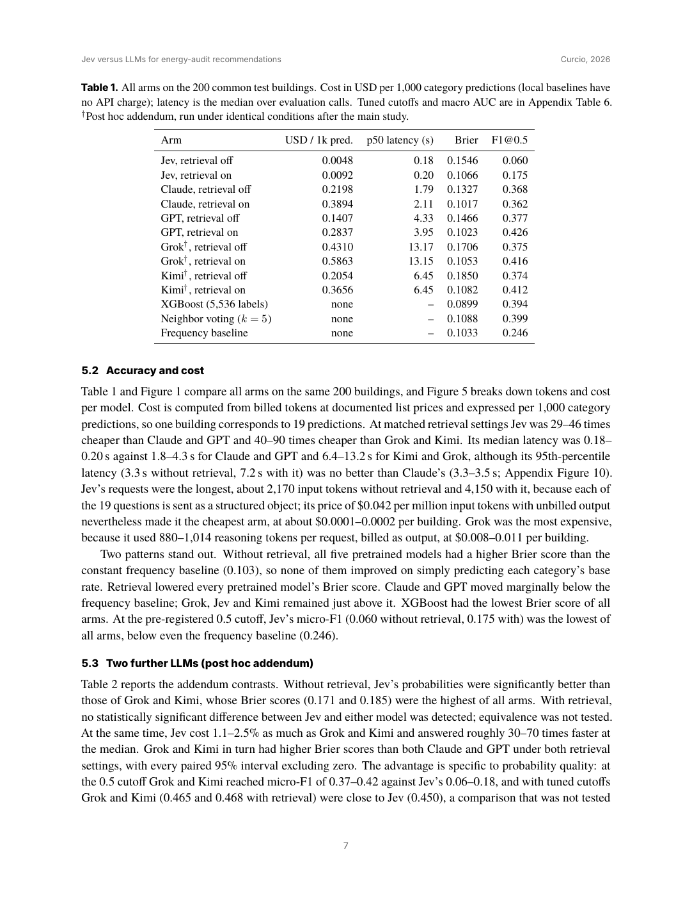
Table 2 · Post hoc Grok/Kimi contrastsمقایسه پسینی Grok/Kimi
Original table and all printed entries are retained in the source view. Read its caption, units, sample size and footnotes together; values are not estimated from plots.جدول اصلی و تمام مقادیر چاپشده در نمای منبع حفظ شدهاند. عنوان، واحد، اندازه نمونه و پانوشت را با هم بخوانید؛ مقداری از نمودار تخمین زده نشده است.
Table 2 · PDF p. 8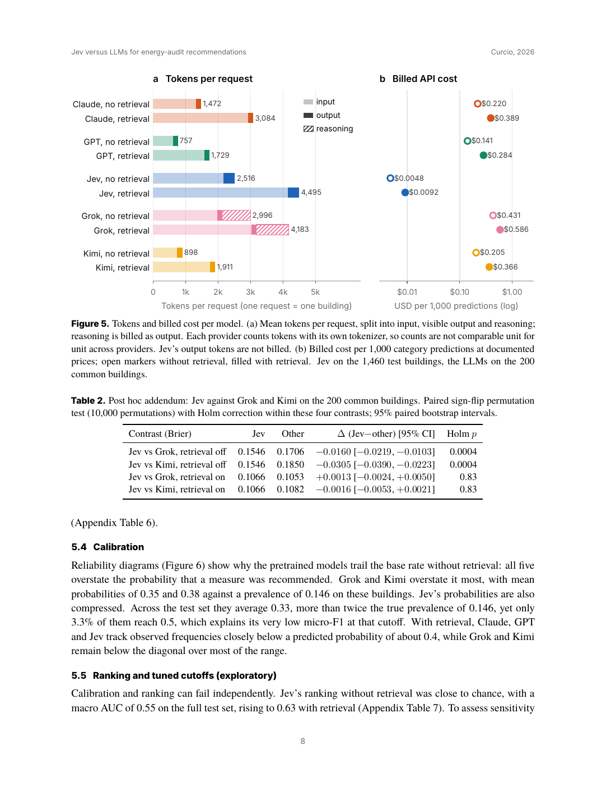
Table 3 · Cascade operating pointsنقاط کار آبشار
Original table and all printed entries are retained in the source view. Read its caption, units, sample size and footnotes together; values are not estimated from plots.جدول اصلی و تمام مقادیر چاپشده در نمای منبع حفظ شدهاند. عنوان، واحد، اندازه نمونه و پانوشت را با هم بخوانید؛ مقداری از نمودار تخمین زده نشده است.
Table 3 · PDF p. 11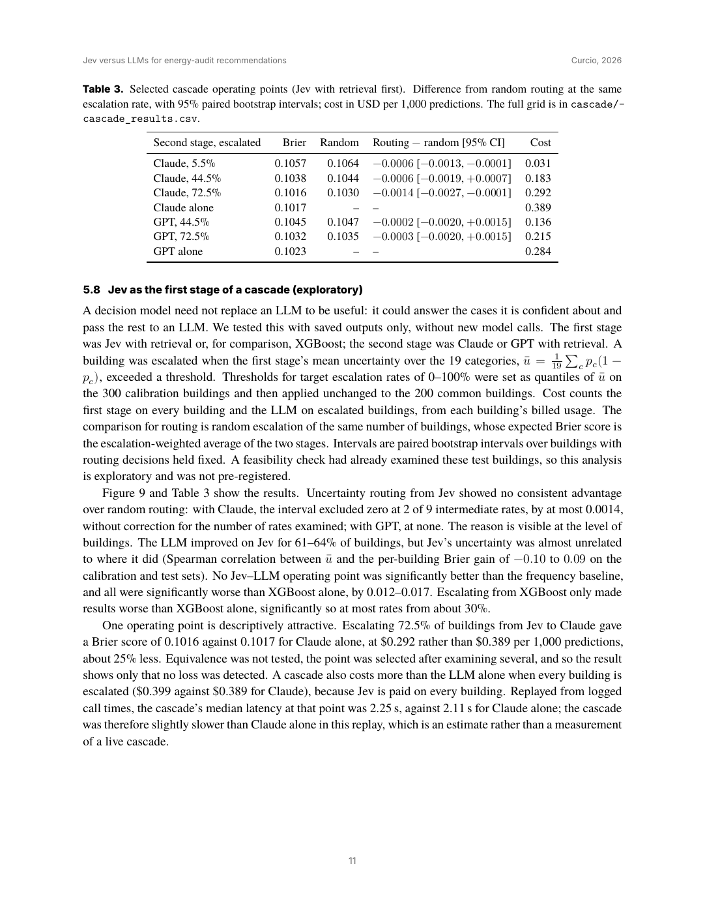
Table 4 · Task-specific supported choicesانتخابهای پشتیبانیشده در همین وظیفه
Original table and all printed entries are retained in the source view. Read its caption, units, sample size and footnotes together; values are not estimated from plots.جدول اصلی و تمام مقادیر چاپشده در نمای منبع حفظ شدهاند. عنوان، واحد، اندازه نمونه و پانوشت را با هم بخوانید؛ مقداری از نمودار تخمین زده نشده است.
Table 4 · PDF p. 13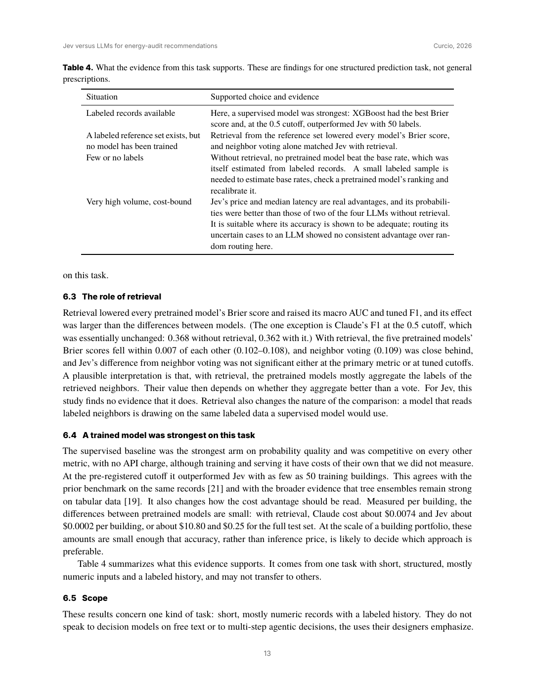
Table 5 · Primary paired contrasts and intervalsمقایسه اصلی جفتی و بازهها
Original table and all printed entries are retained in the source view. Read its caption, units, sample size and footnotes together; values are not estimated from plots.جدول اصلی و تمام مقادیر چاپشده در نمای منبع حفظ شدهاند. عنوان، واحد، اندازه نمونه و پانوشت را با هم بخوانید؛ مقداری از نمودار تخمین زده نشده است.
Table 5 · PDF p. 16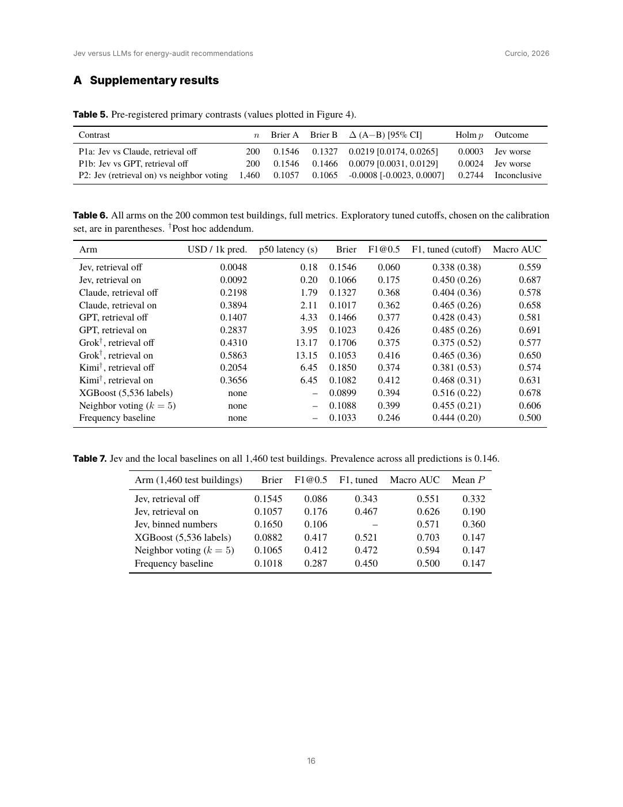
Table 6 · All common-set metrics and cutoffsتمام معیارها و آستانههای مجموعه مشترک
Original table and all printed entries are retained in the source view. Read its caption, units, sample size and footnotes together; values are not estimated from plots.جدول اصلی و تمام مقادیر چاپشده در نمای منبع حفظ شدهاند. عنوان، واحد، اندازه نمونه و پانوشت را با هم بخوانید؛ مقداری از نمودار تخمین زده نشده است.
Table 6 · PDF p. 16Table 7 · Full 1,460-building evaluationارزیابی کل ۱۴۶۰ ساختمان
Original table and all printed entries are retained in the source view. Read its caption, units, sample size and footnotes together; values are not estimated from plots.جدول اصلی و تمام مقادیر چاپشده در نمای منبع حفظ شدهاند. عنوان، واحد، اندازه نمونه و پانوشت را با هم بخوانید؛ مقداری از نمودار تخمین زده نشده است.
Table 7 · PDF p. 16Table 8 · Tuned-cutoff paired F1 contrastsمقایسه جفتی F1 با آستانه تنظیمشده
Original table and all printed entries are retained in the source view. Read its caption, units, sample size and footnotes together; values are not estimated from plots.جدول اصلی و تمام مقادیر چاپشده در نمای منبع حفظ شدهاند. عنوان، واحد، اندازه نمونه و پانوشت را با هم بخوانید؛ مقداری از نمودار تخمین زده نشده است.
Table 8 · PDF p. 17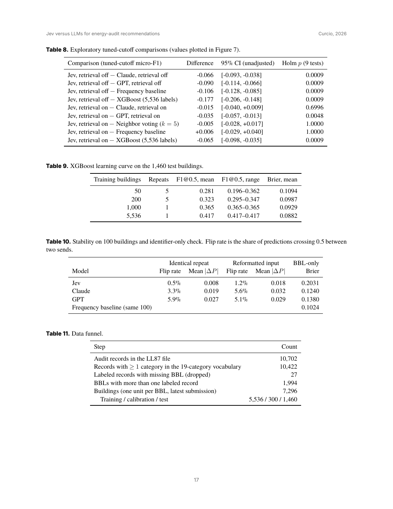
Table 9 · XGBoost label-efficiency learning curveمنحنی کارایی برچسب XGBoost
Original table and all printed entries are retained in the source view. Read its caption, units, sample size and footnotes together; values are not estimated from plots.جدول اصلی و تمام مقادیر چاپشده در نمای منبع حفظ شدهاند. عنوان، واحد، اندازه نمونه و پانوشت را با هم بخوانید؛ مقداری از نمودار تخمین زده نشده است.
Table 9 · PDF p. 17Table 10 · Stability and identifier-only checksپایداری و آزمون شناسه تنها
Original table and all printed entries are retained in the source view. Read its caption, units, sample size and footnotes together; values are not estimated from plots.جدول اصلی و تمام مقادیر چاپشده در نمای منبع حفظ شدهاند. عنوان، واحد، اندازه نمونه و پانوشت را با هم بخوانید؛ مقداری از نمودار تخمین زده نشده است.
Table 10 · PDF p. 17Table 11 · Data filtering funnelمراحل پالایش داده
Original table and all printed entries are retained in the source view. Read its caption, units, sample size and footnotes together; values are not estimated from plots.جدول اصلی و تمام مقادیر چاپشده در نمای منبع حفظ شدهاند. عنوان، واحد، اندازه نمونه و پانوشت را با هم بخوانید؛ مقداری از نمودار تخمین زده نشده است.
Table 11 · PDF p. 17Critical analysis — reviewer assessmentتحلیل انتقادی — ارزیابی مرورگر
Strength: the matched local baselines prevent an API-to-API comparison from hiding a stronger tabular learner. Limitation: the paper’s labels cannot establish causal effectiveness, comfort recovery or safe intervention selection.قوت: پایه محلی همسان مانع پنهانماندن یادگیرنده جدولی بهتر در مقایسه API ها میشود. محدودیت: این برچسبها اثربخشی علّی، بازیابی آسایش یا انتخاب مداخله ایمن را اثبات نمیکنند. Source · PDF p. 5Source · PDF p. 6Source · PDF p. 14
The source’s displayed price units require care: per-category predictions and per-building requests differ by 19. Results on the common 200 cases and the full 1,460 cases must not be mixed. Lack of significance against neighbor voting is inconclusive, not proof of equality.واحد قیمت منبع نیازمند دقت است: پیشبینی دسته و درخواست ساختمان ضریب ۱۹ دارند. نمره ۲۰۰ مورد مشترک با کل ۱۴۶۰ نباید مخلوط شود. غیرمعناداری مقابل رأی همسایه نتیجه نامشخص است، نه برابری. Source · PDF p. 6Source · PDF p. 7Source · PDF p. 16
Role in our researchنقش مقاله در پژوهش ما
Why is it important to our research?چرا برای پژوهش ما مهم است؟
High relevance as an energy-domain counterexample to assuming native confidence is calibrated or that low inference cost improves the final decision. It is about audits rather than operational home control.به عنوان ضدنمونه حوزه انرژی برای فرض کالیبراسیون احتمال بومی یا بهبود تصمیم با هزینه کم بسیار مرتبط است؛ موضوع آن ممیزی است، نه کنترل عملیاتی خانه. Source · PDF p. 1Source · PDF p. 8Source · PDF p. 13Source · PDF p. 14
What does it contribute to our research?چه سهمی در پژوهش ما دارد؟
Provides building-grouped splits, prevalence and supervised controls, a separation of ranking from scale error, and random-routing controls for escalation. These are evaluation contributions we can adapt.تقسیم گروهی ساختمان، پایه فراوانی و نظارتشده، تفکیک رتبهبندی از مقیاس احتمال و کنترل ارجاع تصادفی را ارائه میکند؛ اینها مشارکت قابل اقتباس برای ارزیابیاند. Source · PDF p. 5Source · PDF p. 6Source · PDF p. 11Source · PDF p. 14
How can we employ it?چگونه از آن استفاده کنیم؟
Proposed P5/P7/P8 use: calibrate typed diagnostic/routing probabilities on held-out trajectories, compare against prevalence/simple learned classifiers, and report end-to-end recovery plus complete cascade costs. Keep audit labels separate from causal fault truth.کاربرد پیشنهادی P5/P7/P8: کالیبراسیون احتمال تشخیص/ارجاع روی مسیر نگهداشتهشده، مقایسه با فراوانی و طبقهبند ساده و گزارش بازیابی نهایی و هزینه کامل آبشار؛ برچسب ممیزی را حقیقت علّی خطا فرض نکنیم. Source · PDF p. 6Source · PDF p. 8Source · PDF p. 11Source · PDF p. 14
Should we implement it as a baseline?آیا باید آن را بهعنوان خطمبنا پیاده کنیم؟
Do not reproduce the LL87 audit task as a main HEMS baseline. If Jev routing is adopted, include an adapted Jev-only or Jev→LLM cascade plus random escalation and a simple supervised decision baseline on exactly our states. This is conditional, not approved scope.بازسازی وظیفه ممیزی LL87 به عنوان خطمبنای اصلی HEMS لازم نیست. اگر ارجاع Jev انتخاب شد، Jev تنها یا آبشار Jev→LLM، ارجاع تصادفی و پایه تصمیم نظارتشده ساده را روی همان حالتهای پروژه مقایسه کنیم؛ مشروط است و دامنه تأییدشده نیست. Source · PDF p. 11Source · PDF p. 13Source · PDF p. 14
Original source pagesصفحات اصلی منبع
PDF page 1
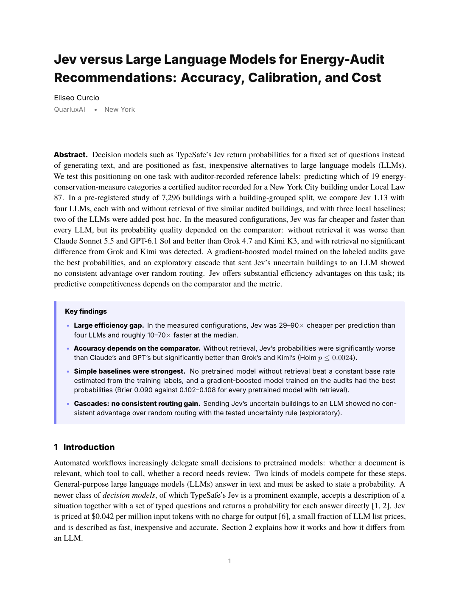
PDF page 2
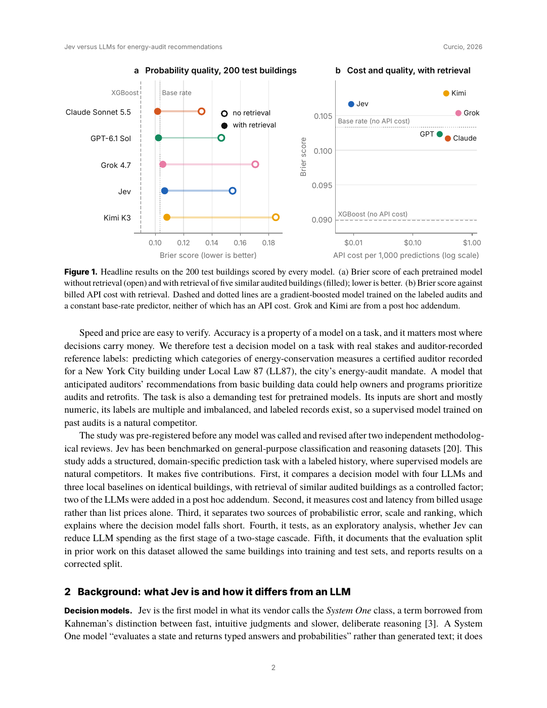
PDF page 3
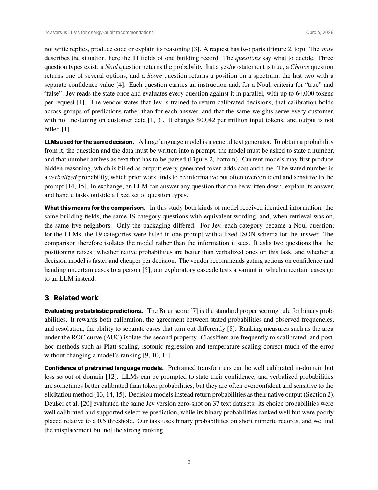
PDF page 4
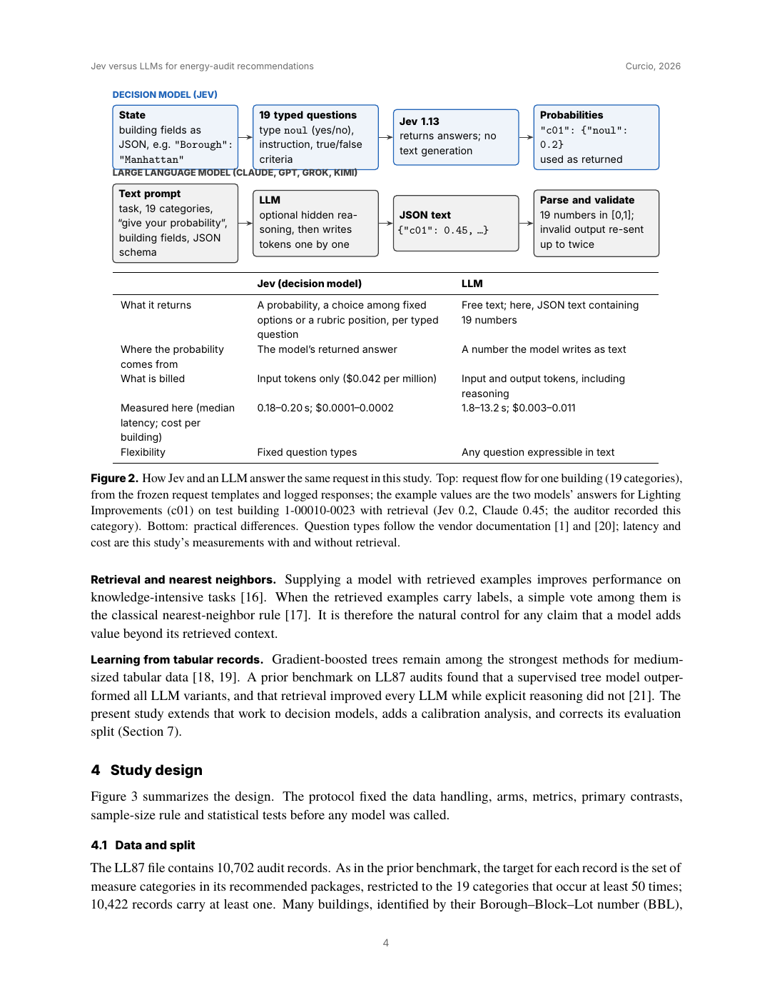
PDF page 5
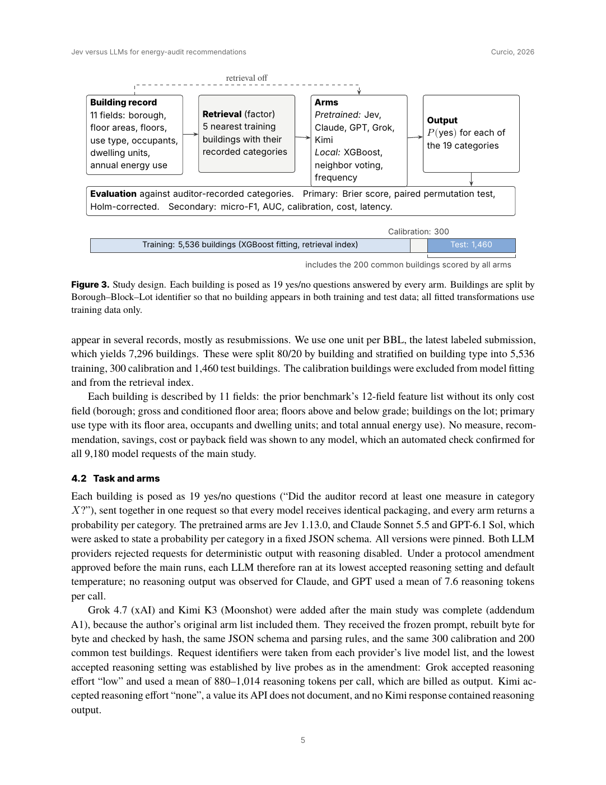
PDF page 6
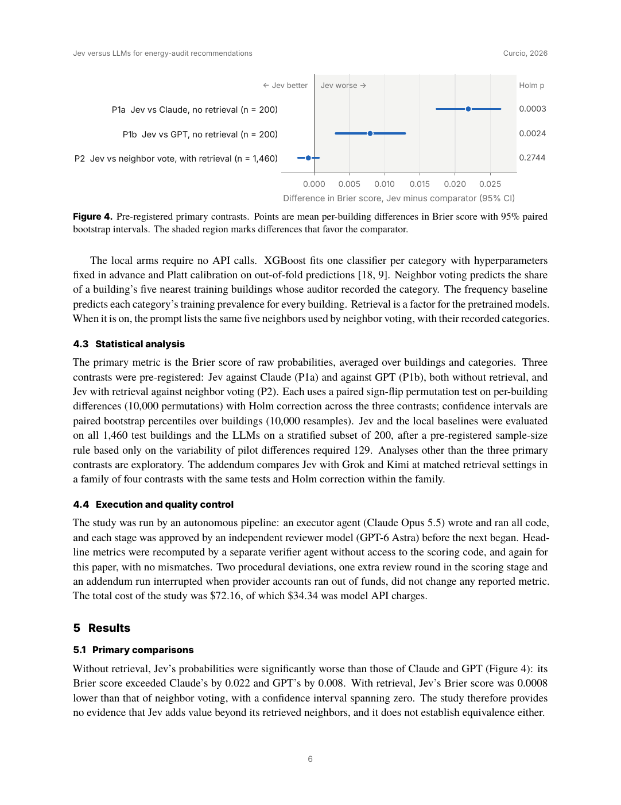
PDF page 9
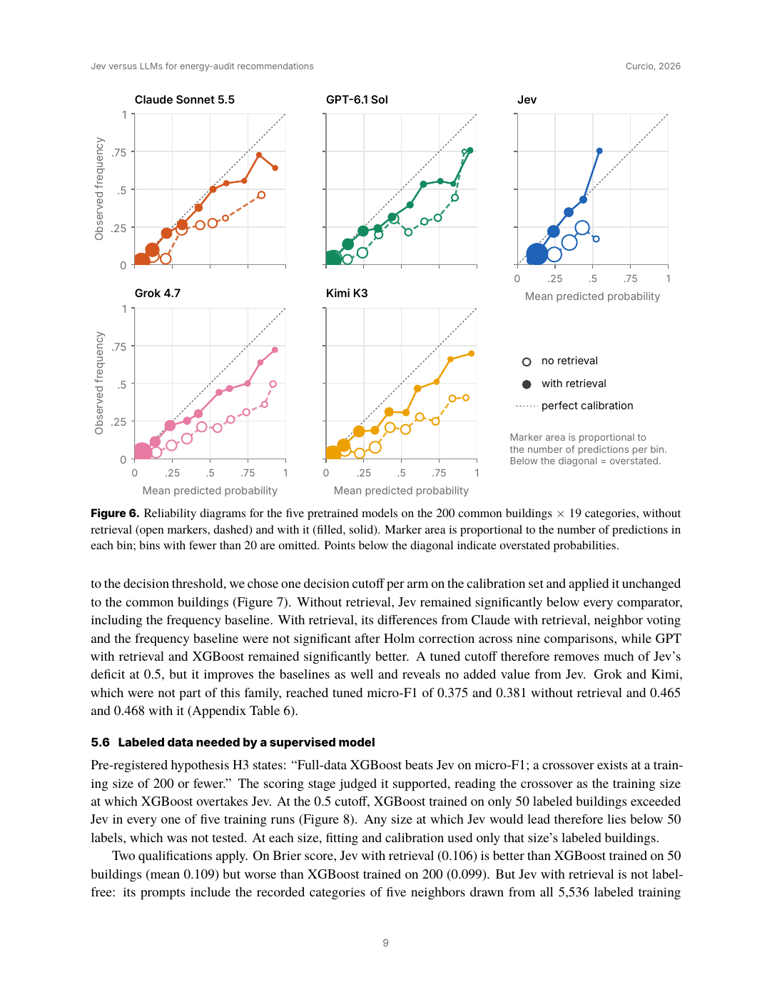
PDF page 10
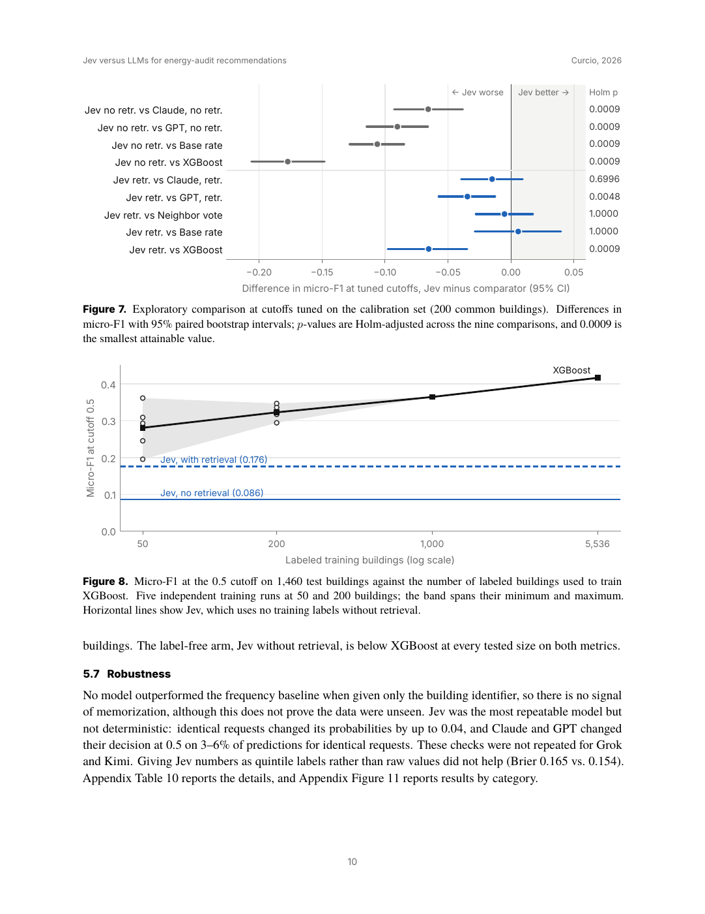
PDF page 12
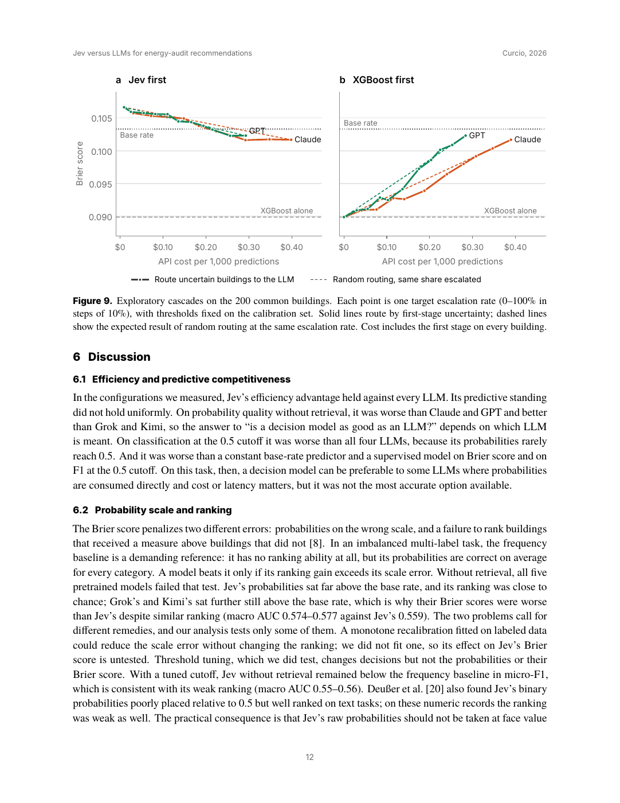
PDF page 14
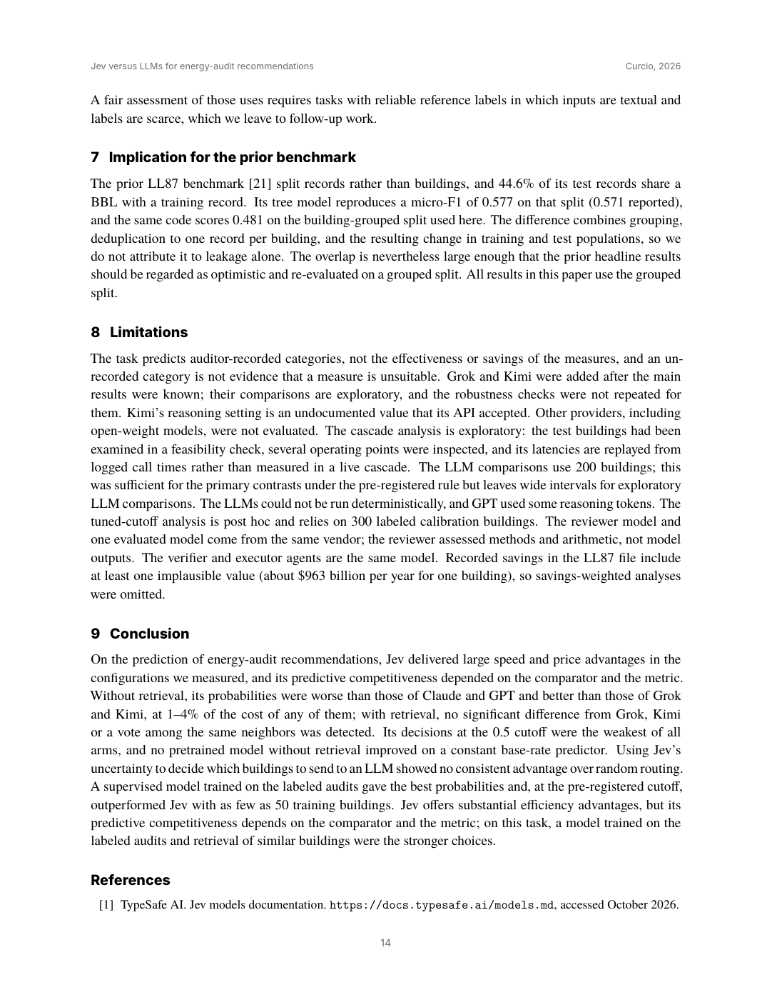
PDF page 15
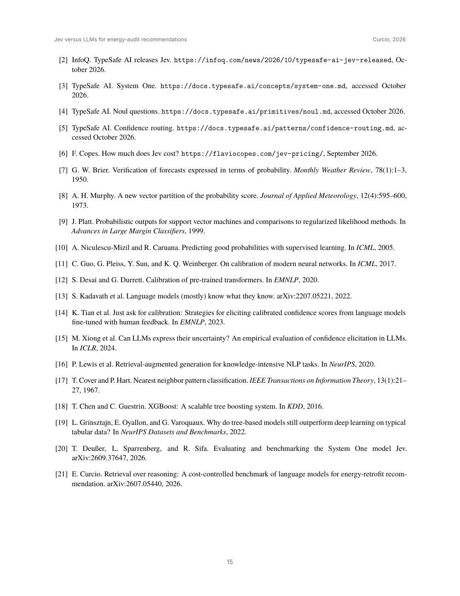
PDF page 18
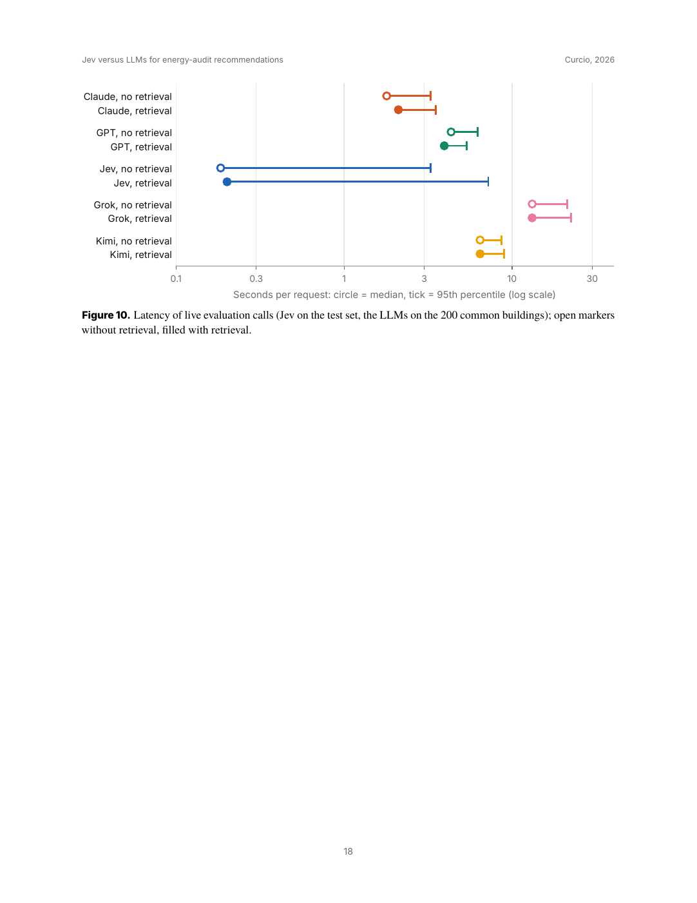
PDF page 19
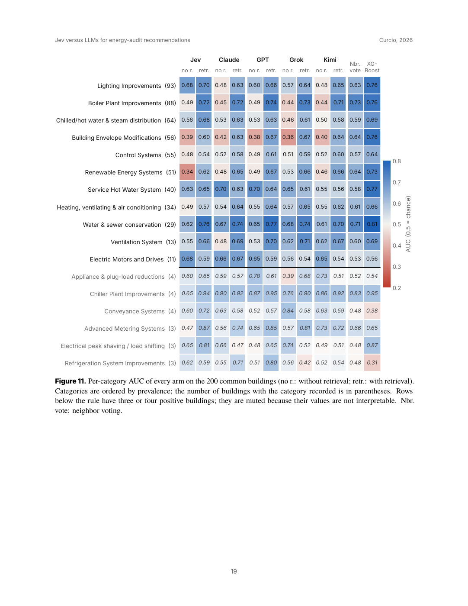
Full bibliographyکتابنامه کامل
Full bibliography transcribed from the source PDF. Original reference pages are the authority for formatting and extraction ambiguities; cited works were not independently analyzed just because they appear here.کتابنامه کامل از PDF منبع استخراج شده است. صفحه اصلی مرجع نگارش و ابهام استخراج است؛ درج منبع به معنی تحلیل مستقل آن اثر نیست.